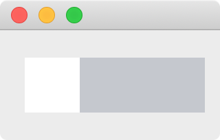
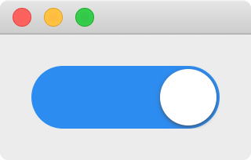

在 Android 或者 iOS 的界面中经常看到下图这样的 check box，并且选中状态 checked 变化时还有动画效果把白色的小圆球 indicator 从一边移动到另一边。Qt 提供了 QCheckBox，不过不能直接修改 QSS 实现这样的样式，而且也没有 indicator 移动的动画效果。
在这一篇文章中将介绍自定义一个 check box 的类 AnimatedCheckBox，实现上面样式的 check box，并且使用动画移动 indicator，实现时需要注意一下几点:
AnimatedCheckBox 继承了 QCheckBox，这样在使用 QCheckBox 的地方就能直接替换为 AnimatedCheckBox 了，并且不需要我们自己维护 check box 的各种状态，相关的信号槽直接使用 QCheckBox 的就可以了
使用 QPropertyAnimation 实现动画效果
虽然 QCheckBox 有一个 indicator 的 subcontrol，但是满足不了需求，所以我们使用了一个 QLabel 来代替默认的 indicator
为了使用动画移动 indicator，不能使用布局管理器来布局 indicator，而是使用绝对坐标定位的方式来控制 indicator 的位置
默认点击 QCheckBox 的 indicator 或者文字时才能切换选中状态，点击 QCheckBox 上其他空白的地方没有反应，我们希望点击 AnimatedCheckBox 上的任何地方都能够切换选中状态，需要重写 mousePressEvent
为了不使用 QCheckBox 的默认样式，实现一个空的 paintEvent
由于 AnimatedCheckBox 的大小是不固定的，所以 indicator 的大小和位置应该在 resizeEvent 中根据 AnimatedCheckBox 的大小和 checked 的值进行计算
使用 QPainter 绘制的方式也能够实现这样的效果 (实现阴影就不那么容易了)，这里我们使用 QSS 的方式调整显示的效果，还可以把样式保存到文件中，修改样式不需要重新编译程序
有了这些基础知识后， 逐步的来实现这样的 check box 就容易多了。
AnimatedCheckBox 骨架 1 2 3 4 5 6 7 8 9 10 11 12 13 14 15 16 17 18 19 20 21 22 23 24 25 #ifndef ANIMATEDCHECKBOX_H #define ANIMATEDCHECKBOX_H #include <QCheckBox> class QLabel ;class AnimatedCheckBox :public QCheckBox {public : AnimatedCheckBox (QWidget *parent = nullptr ); protected : void paintEvent (QPaintEvent *event) override void resizeEvent (QResizeEvent *event) override void mousePressEvent (QMouseEvent *event) override private : QLabel *indicator; }; #endif
1 2 3 4 5 6 7 8 9 10 11 12 13 14 15 16 17 18 19 20 21 22 23 24 25 26 27 28 29 30 31 32 33 34 35 36 37 38 39 40 41 42 43 44 45 46 47 48 49 50 51 52 53 54 55 56 #include "AnimatedCheckBox.h" #include <QStyle> #include <QLabel> #include <QMouseEvent> #include <QApplication> AnimatedCheckBox::AnimatedCheckBox (QWidget *parent) : QCheckBox (parent) { indicator = new QLabel (this ); this ->setMinimumHeight (40 ); this ->setAttribute (Qt::WA_StyledBackground, true ); this ->setProperty ("class" , "AnimatedCheckBox" ); indicator->setProperty ("class" , "AnimatedCheckBoxIndicator" ); qApp->setStyleSheet (R"( .AnimatedCheckBox[checked=true ] { background: #2d8cf0 } .AnimatedCheckBox[checked=false] { background: #c5c8ce } .AnimatedCheckBoxIndicator { background: white } )" ); connect (this , &QCheckBox::toggled, [=] { int x = this ->isChecked () ? this ->width () - indicator->width () : 0 ; int y = 0 ; indicator->move (x, y); this ->style ()->polish (this ); }); } void AnimatedCheckBox::paintEvent (QPaintEvent *) void AnimatedCheckBox::resizeEvent (QResizeEvent *) int x = this ->isChecked () ? this ->width () - indicator->width (): 0 ; int y = 0 ; int w = height (); int h = w; indicator->setGeometry (x, y, w, h); this ->setMinimumWidth (height () * 2 ); } void AnimatedCheckBox::mousePressEvent (QMouseEvent *event) event->accept (); setChecked (!isChecked ()); }
得到的效果如下，checked 为 false 时 indicator 在最左边，为 true 时 indicator 在最右边:

## 实现圆角
QSS 中 border-radius 的值如果大于对应边的一半时就没有圆角效果了，由于 AnimatedCheckBox 和 indicator 的大小不是固定的，需要在它们的大小改变时动态的计算圆角的半径，在 resizeEvent 的最后面加上下面的代码实现圆角效果:
1 2 3 4 this ->setStyleSheet (QString (".AnimatedCheckBox { border-radius: %1px } .AnimatedCheckBoxIndicator { border-radius: %2px }" ) .arg (this ->height () / 2 ) .arg (indicator->height () / 2 ));
## 增加边框
为了利用已有的相关 API，使用 AnimatedCheckBox 的 contents margins 的 left 来保存边框的宽度，计算 indicator 的位置和大小的方法修改为:
1 2 3 4 5 int b = this ->contentsMargins ().left ();int x = this ->isChecked () ? this ->width () - indicator->width () - b : b;int y = b;int w = height () - b - b;int h = w;
并在构造函数中调用 this->setContentsMargins(2, 2, 2, 2) 设置默认边框宽度为 2:
实际使用中，可根据具体的设计在 AnimatedCheckBox 外调用 setContentsMargins 来修改边框的宽度。
使用动画 使用 QPropertyAnimation 给 AnimatedCheckBox 加上动画效果吧，把构造函数中的 connect 部分修改为:
1 2 3 4 5 6 7 8 9 10 11 12 13 14 15 QPropertyAnimation *animation = new QPropertyAnimation (indicator, "pos" , this ); connect (this , &QCheckBox::toggled, [=] { int b = this ->contentsMargins ().left (); int x = this ->isChecked () ? this ->width () - indicator->width () - b : b; int y = b; animation->stop (); animation->setDuration (200 ); animation->setEndValue (QPoint (x, y)); animation->setEasingCurve (QEasingCurve::InOutCubic); animation->start (); this ->style ()->polish (this ); });
提示:
在动画开始前调用了 animation->stop()，是为了避免快速点击多次时前次动画没有完成影响本次动画的效果
QPropertyAnimation 缓冲动画的默认缓冲曲线是匀速的 linear easing curve，修改为 QEasingCurve::InOutCubic 后效果更好，了解更多的缓冲曲线请阅读 QEasingCurve 的帮助文档，大家可以自己修改为其他的效果试试看
## 增加阴影
更进一步，还可以使用 QGraphicsDropShadowEffect 给 indicator 增加阴影效果，在构造函数中增加:
1 2 3 4 QGraphicsDropShadowEffect *effect = new QGraphicsDropShadowEffect (this ); effect->setBlurRadius (10 ); effect->setOffset (0 , 1 ); indicator->setGraphicsEffect (effect);

到此，实现了一个和 Android 或者 iOS 中差不多的 check box 了，最后附上 AnimatedCheckBox.cpp 完整的代码:
1 2 3 4 5 6 7 8 9 10 11 12 13 14 15 16 17 18 19 20 21 22 23 24 25 26 27 28 29 30 31 32 33 34 35 36 37 38 39 40 41 42 43 44 45 46 47 48 49 50 51 52 53 54 55 56 57 58 59 60 61 62 63 64 65 66 67 68 69 70 71 72 73 74 75 76 77 #include "AnimatedCheckBox.h" #include <QStyle> #include <QLabel> #include <QMouseEvent> #include <QApplication> #include <QPropertyAnimation> #include <QGraphicsDropShadowEffect> AnimatedCheckBox::AnimatedCheckBox (QWidget *parent) : QCheckBox (parent) { indicator = new QLabel (this ); this ->setMinimumHeight (40 ); this ->setContentsMargins (2 , 2 , 2 , 2 ); this ->setAttribute (Qt::WA_StyledBackground, true ); this ->setProperty ("class" , "AnimatedCheckBox" ); indicator->setProperty ("class" , "AnimatedCheckBoxIndicator" ); QGraphicsDropShadowEffect *effect = new QGraphicsDropShadowEffect (this ); effect->setBlurRadius (10 ); effect->setOffset (0 , 1 ); indicator->setGraphicsEffect (effect); qApp->setStyleSheet (R"( .AnimatedCheckBox[checked=true ] { background: #2d8cf0 } .AnimatedCheckBox[checked=false] { background: #c5c8ce } .AnimatedCheckBoxIndicator { background: white } )" ); QPropertyAnimation *animation = new QPropertyAnimation (indicator, "pos" , this ); connect (this , &QCheckBox::toggled, [=] { int b = this ->contentsMargins ().left (); int x = this ->isChecked () ? this ->width () - indicator->width () - b : b; int y = b; animation->stop (); animation->setDuration (200 ); animation->setEndValue (QPoint (x, y)); animation->setEasingCurve (QEasingCurve::InOutCubic); animation->start (); this ->style ()->polish (this ); }); } void AnimatedCheckBox::paintEvent (QPaintEvent *) void AnimatedCheckBox::resizeEvent (QResizeEvent *) int b = this ->contentsMargins ().left (); int x = this ->isChecked () ? this ->width () - indicator->width () - b : b; int y = b; int w = height () - b - b; int h = w; indicator->setGeometry (x, y, w, h); this ->setMinimumWidth (height () * 2 ); this ->setStyleSheet (QString (".AnimatedCheckBox { border-radius: %1px } .AnimatedCheckBoxIndicator { border-radius: %2px }" ) .arg (this ->height () / 2 ) .arg (indicator->height () / 2 )); } void AnimatedCheckBox::mousePressEvent (QMouseEvent *event) event->accept (); setChecked (!isChecked ()); }